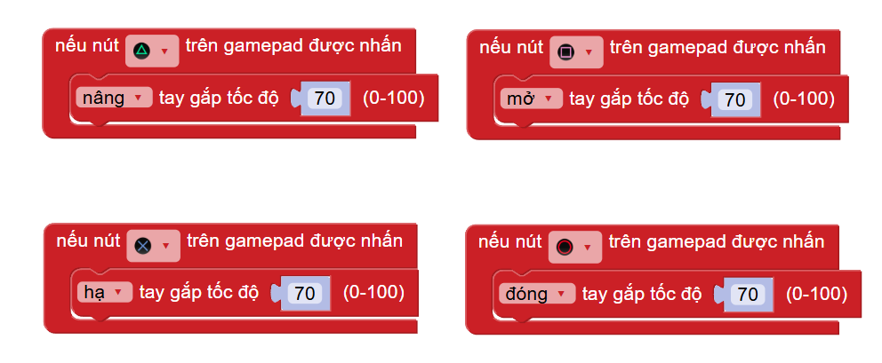

Tay cầm điều khiển robot
1. Giới thiệu
Gamepad là một phụ kiện được sử dụng để mở rộng khả năng tương tác với các loại robot trong hệ sinh thái OhStem, bao gồm Robot xBot, Robot Rover và Maker Robot. Việc kết nối giữa Gamepad và robot được thực hiện thông qua module Gamepad Receiver ở cổng giao tiếp I2C có trên robot. Điều này cho phép người dùng dễ dàng kiểm soát và điều khiển robot một cách linh hoạt hơn, tăng tính năng tương tác và trải nghiệm với robot.

Đặc biệt, Gamepad có 2 joystick và 12 nút nhấn có thể lập trình để tạo ra các tính năng tùy biến để người dùng điều khiển robot theo ý muốn. Các tính năng bao gồm di chuyển, nâng hạ, dò line,… sẽ giúp bạn khám phá tất cả các chức năng của robot và tạo ra những trải nghiệm mới mẻ.
2. Link sản phẩm

3. Thông số kỹ thuật
Thông số kỹ thuật của module Gamepad Receiver:
{kind=link}
Thông số kỹ thuật của Gamepad:
{kind=link}
4. Kết nối GamePad với Robot Rover
5. Các nút nhấn có trên Gamepad:
Mặt trước của Gamepad:
{kind=link}
Mặt trên của Gamepad:
{kind=link}
6. Chức năng của module Gamepad Receiver
Module Gamepad Receiver là thiết bị để kết nối robot với tay cầm điều khiển, trên module sẽ có các nút nhấn và đèn báo hiệu như sau:
{kind=link}
Đèn báo dung lượng pin trên Gamepad:
Khi gamepad đã được kết nối tới module, các đèn này sẽ hiển thị tình trạng pin của Gamepad như sau:
Pin < 20% hoặc Gamepad chưa được kết nối: 0 đèn sáng
Pin < 40%: 1 đèn sáng
Pin <60%: 2 đèn sáng
Pin <80%: 3 đèn sáng
Pin >80%: 4 đèn sáng
Đèn báo trạng thái:
Đèn này sẽ báo cho bạn biết module đã kết nối thành công với Gamepad hay chưa.
2.1. Đèn chớp tắt nhanh (0,2s): Module đang tìm kiếm và cấp phép kết nối đến các gamepad mới.
Sau đó, nhấn giữ nút Nguồn và nút Share trên Gamepad cùng 1 lúc để Gamepad vào chế độ kết nối mới. Khi đó đèn led trên Gamepad sẽ nháy trắng liên tục báo hiệu đã vào chế độ kết nối mới.
{kind=link}
2.2. Đèn chớp tắt chậm (1s): Module đang tìm kiếm và kết nối các Gamepad đã được cho phép kết nối ở bước 2.1.
Đồng thời nhấn nút nguồn Gamepad, đèn led trên Gamepad sẽ nháy trắng chậm báo hiệu đã vào chế độ tìm thiết bị đã kết nối. Khi đèn trên GamePad và đèn báo trạng thái trên module Gamepad Receiver cùng hiện màu xanh thì đã kết nối thành công.
{kind=link}
2.3. Đèn chuyển từ trạng thái luôn bật sang chớp tắt 3 lần rồi tắt hẳn: Module đã xóa tất cả các kết nối đã cấp phép ở bước 2.1.
Nút Reset:
Khởi động lại module, đồng thời ngắt kết nối với Gamepad đã kết nối.
Nút Clear: Nút này có chức năng sau:
Nhấn giữ nút Clear sau khi nhấn nút Reset: Lúc này đèn báo kết nối sẽ nhấp nháy nhanh như mô tả ở mục 2.2 để bắt đầu tìm kiếm thiết bị Gamepad mới.
Nhấn giữ nút Clear trong vòng 3 giây trong quá trình Gamepad đã kết nối thành công với module Gamepad Receiver thì module Gamepad Receiver sẽ xóa kết nối của Gamepad đã được cho phép. Để sử dụng kết nối lại, bạn cần thực hiện lại bước 2.1
7. Hướng dẫn lập trình với OhStem App
7.1. Thư viện
Vào giao diện lập trình cho Yolo:Bit (hoặc xBot) trong OhStem App tại địa chỉ https://app.ohstem.vn/ hoặc ứng dụng OhStem App trên mobile ( Tải trên Google Play / App Store với tên tìm kiếm là “OhStem App”)
{kind=link}
Nhấn vào mục Mở Rộng ở danh sách bên trái:
{kind=link}
Chọn thư viện Robocon trong danh sách mục mở rộng có sẵn (hoặc nhập tên Robocon vào ô tìm kiếm nếu bạn không nhìn thấy):
{kind=link}
Chọn tải thư viện:
{kind=link}
Chọn thiết bị Yolo:Bit để kết nối (nếu chưa kết nối) và phải đảm bảo đã cài đặt thư viện thành công (bên trái giao diện xuất hiện danh mục ROBOCON như hình):
{kind=link}
7.2. Giới thiệu khối lệnh
Trong danh mục khối lệnh ROBOCON sẽ có 1 mục Gamepad sẽ có các khối lệnh với chức năng như sau:
Khối lệnh khởi tạo Gamepad:
Để lập trình cho Gamepad, trước tiên bạn cần khai báo chân kết nối của module Gamepad Receiver với robot bằng câu lệnh sau:
{kind=link}
Cập nhật thông tin từ Gamepad:
Câu lệnh này được sử dụng để cập nhật và xử lý thông tin từ Gamepad một cách liên tục. Do đó, trong chương trình lập trình, câu lệnh này phải được đặt trong vòng lặp lại mãi để luôn được cập nhật các tín hiệu mới nhất từ Gamepad.
{kind=link}
Xử lý tác vụ các nút nhấn trên Gamepad:
Ngoài việc điều khiển các hướng di chuyển của robot, joystick trái và joystick phải còn có chức năng như một nút nhấn khi được nhấn. Câu lệnh sự kiện này sẽ xử lý các nút nhấn tương ứng khi nút được nhấn:
{kind=link}
7.3 Nạp chương trình
Để làm quen với Gamepad, chúng ta sẽ lập trình một chương trình đơn giản như sau:
Robot Rover:
{kind=link}
Chương trình điều khiển Robot Rover bằng Gamepad
Giải thích chương trình:
Khi nạp chương trình vào Yolo:Bit thành công, các câu lệnh đổi màu đèn Rover trong phần bắt đầu sẽ giúp bạn nhận biết được robot đã được khởi động thành công.
{kind=link}
Mỗi nút nhấn sẽ có một chức năng khác nhau, chẳng hạn 4 phím của tay cầm sẽ điều khiển chức năng đóng - mở - nâng - hạ tay gắp:
{kind=link}
Mỗi nút nhấn chỉ thực hiện một chức năng, do đó bạn hãy kiểm tra thật kỹ trong chương trình các nút nhấn được chọn có bị lặp lại hay không nhé!
8. Hướng dẫn lập trình với Arduino
Mở phần mềm Arduino IDE. Xem hướng dẫn lập trình với Arduino tại đây.
Copy đoạn code sau, click vào nút
Verifyđể kiểm tra lỗi chương trình. Sau khi biên dịch không báo lỗi, bạn có thể nạp đoạn code vào board.
8.1 Chương trình điều khiển robot cơ bản
#include <Wire.h>
#include "gamepad.h"
Gamepad_Receiver gamepad;
void setup() {
Serial.begin(115200);
gamepad.begin();
Serial.println("Begin");
}
void loop() {
gamepad.update(); // hàm để cập nhật thông tin của gamepad
Serial.print((int)gamepad.isConnected); // hàm kiểm tra kết nối của gamepad
// các hàm để lấy thông số của tay cầm
Serial.print(" "); Serial.print(gamepad.dpad_left);
Serial.print(" "); Serial.print(gamepad.dpad_right);
Serial.print(" "); Serial.print(gamepad.dpad_up);
Serial.print(" "); Serial.print(gamepad.dpad_down);
Serial.print(" "); Serial.print(gamepad.aLx);
Serial.print(" "); Serial.print(gamepad.aLy);
Serial.print(" "); Serial.print(gamepad.aRx);
Serial.print(" "); Serial.print(gamepad.aRy);
Serial.print(" "); Serial.print(gamepad.al2);
Serial.print(" "); Serial.print(gamepad.ar2);
Serial.print(" "); Serial.print(gamepad.a);
Serial.print(" "); Serial.print(gamepad.b);
Serial.print(" "); Serial.print(gamepad.x);
Serial.print(" "); Serial.print(gamepad.y);
Serial.print(" "); Serial.print(gamepad.l1);
Serial.print(" "); Serial.print(gamepad.l2);
Serial.print(" "); Serial.print(gamepad.r1);
Serial.print(" "); Serial.print(gamepad.r2);
Serial.print(" "); Serial.print(gamepad.sys);
Serial.println();
Serial.println((int)gamepad.readJoystick(0)); // hàm để định giá trị nhận được từ joystick (0 là trái, 1 là phải)
Serial.println((int)gamepad.j_distance); // hàm trả về giá trị khoảng cách kéo của joystick
Serial.println((int)gamepad.axis_x); // khoảng cách theo trục x
Serial.println((int)gamepad.axis_y); // khoảng cách theo trục y
Serial.println();
delay(100);
}
8.2 Gamepad điều khiển mạch động cơ
Bạn có thể tham khảo mạch động cơ của OhStem tại đây.
#include <Wire.h>
#include "gamepad.h"
#include "MotorDriver.h"
Gamepad_Receiver gamepad;
DCMotor motor;
void setup() {
Serial.begin(115200);
gamepad.begin();
Serial.println("Begin");
motor.setSpeed(1, BACKWARD, 0);
}
void loop() {
//Serial.println("Set led color: ");
//Serial.println(gamepad.setLedColor(0, 255, 0));
gamepad.update();
if (gamepad.isConnected == 1) {
if (gamepad.dpad_up == 1) {
motor.setSpeed(1, FORWARD, 50);
motor.setSpeed(0, FORWARD, 50);
}else if (gamepad.dpad_down == 1){
motor.setSpeed(1, BACKWARD, 50);
motor.setSpeed(0, BACKWARD, 50);
} else {
motor.setSpeed(1, BACKWARD, 0);
motor.setSpeed(0, BACKWARD, 0);
}
} else {
motor.setSpeed(1, BACKWARD, 0);
motor.setSpeed(0, BACKWARD, 0);
}
delay(100);
}
Note
Link thư viện tham khảo https://github.com/AITT-VN/gamepad_receiver_arduino_lib.git